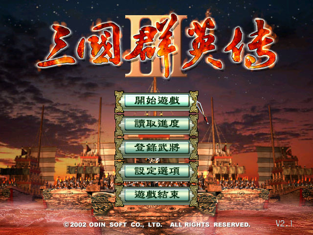
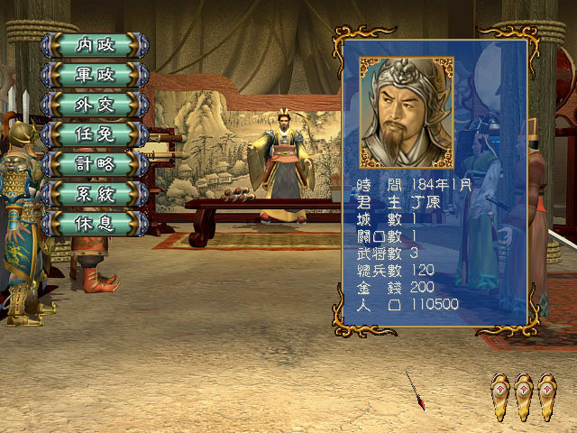

名稱：三國群英傳3 (中文版) 簡介：奧汀2001年出品的戰略遊戲，由智冠代理發行，2002年推出加強版 [待補]。

保護：光碟SafeDisc 2.51，破解碼（需先去除SafeDisc保護）： Sango3.EXE 83 7D FC 1A 7D 7C -- -- -- -- -- 73 需將第二片的Music.PAK和Start.avi拷入安裝目錄，否則會無音樂與開頭動畫。 檔案：san3v106.rar = 1.06更新檔 san3v210.rar = 加強版2.10更新檔 nocd100.rar = 1.00免光碟檔 nocd106.rar = 1.06免光碟檔 nocd200.rar = 加強版2.00免光碟檔 nocd210.rar = 加強版2.10免光碟檔 sg3-Steam差異檔.rar = Steam版差異檔，匯入2.10版即成Steam版